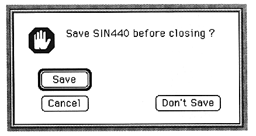

Return to previous page | Return to menu
-
7. Error handling
- If any error occurs, the process is canceled and an error dialog box is displayed.

This dialog box displays the contents of errors during communication with SCSP and other application errors.
Return to previous page | Return to menu